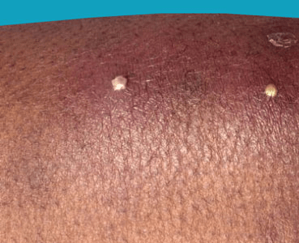
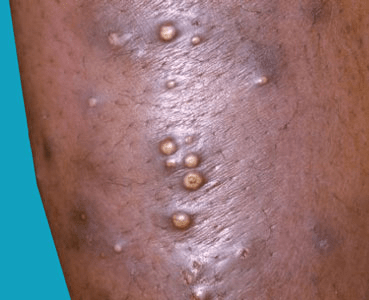

What are Boils (Furunculosis)?
Boils (furuncles) are painful pus-filled bumps on the skin resulting from the deep
infection of a hair follicle. The infection is usually caused by a type of bacteria
called Staphylococcus aureus ("staph"). Many people are "carriers" of the staph germ,
meaning that it normally lives on their skin or in their nose without doing them any
harm. Tiny breaks in the surface of the skin (such as those caused by friction or
scratching), however, can help the germ gain entry into and infect the hair follicle,
resulting in a boil.
Boils may resolve with simple self-care measures, but the infected fluid (pus) needs
to drain in order for them to heal completely. Many boils drain of their own accord,
or they can be lanced by a health care professional. Antibiotics may also be prescribed.
Untreated boils can enlarge or grow together to form a giant multi-headed boil (carbuncle).
Rarely, the infection in the skin can get into the bloodstream, leading to serious illness.

Boils are most common in teenagers and young adults.
People that are particularly prone to developing boils include:
- Athletes participating in contact sports or using shared equipment.
- Individuals with a weakened immune system, such as persons with HIV, diabetics,
and those taking certain medications such as the types of medications used to prevent
rejection of a transplanted organ or to treat cancer (chemotherapy).
- Individuals with another skin condition that may lead to scratching or other
injury to the skin (eczema, scabies).
- Staph carriers.
- People who are obese.
- Individuals with poor nutrition.
- People living in close quarters with others (military barracks, prison, homeless shelters).
Boils and carbuncles are often caused by a type of bacteria called Staphylococcus
aureus (staph bacteria) that infects one or more hair follicles. Staph bacteria
usually live harmlessly on the surface of the skin or in the lining of the nose.
You can get a boil when bacteria enter the skin through cuts and grazes. Your
immune system responds by sending infection-fighting white blood cells to kill
the bacteria.
Over time, a mixture of dead bacteria, dead white blood cells and dead skin cells
builds up inside the boil to form pus.
A carbuncle develops when the infection spreads further beneath the skin to
create a cluster of boils.
A red-to-purple, tender lump on an area of the skin that also has hair. The most common
areas for boils to occur are places where there is friction and/or places that tend to
be sweaty, such as the buttocks, armpits, groin, neck, shoulders, and face. The skin
surrounding the lump may look swollen and red. The center of the lump eventually becomes
filled with yellow or white pus that you will be able to see (called "coming to a head").
The pus is a mixture of bacteria and infection-fighting white blood cells.

Although most boils and carbuncles don't cause further problems, some people develop
a secondary infection.
This can range from a relatively minor (though often very painful) infection of the
deeper layer of the skin, such as cellulitis, to rarer and more serious complications,
such as sepsis.
Larger boils and carbuncles can also lead to scarring.
Warm compresses applied to the area for 20 minutes at least 3–4 times a day may ease
the discomfort and help encourage the boil to drain. If the boil starts to drain,
wash the area with antibacterial soap and apply some triple antibiotic ointment
and a loose bandage. Repeat this process of cleansing and bandaging the area 2–3
times a day until the skin is healed.
Boils can be very contagious. Do not share clothing, towels, bedding, or sporting
equipment with others while you have a boil. Wash your hands frequently with antibacterial
hand soap to avoid spreading the infection to others.
Use an antibacterial soap on boil-prone areas when showering, and dry your skin thoroughly
after bathing. Avoid tight-fitting clothing and activities that cause a great deal of sweating.
Do not pop the boil yourself with a pin or needle. Doing so may make the infection worse.
You can't always avoid getting a boil or carbuncle, but these simple steps can reduce your risk:
- wash your skin regularly using a mild antibacterial soap
- carefully clean any cuts, wounds or grazes (even small ones)
- cover cuts, wounds and grazes with a sterile bandage until they heal
- eat healthily and exercise regularly to boost your immune system
See your doctor if:
- You have multiple boils or if the boil(s) increases in size or number.
- You have a fever or chills, severe pain, or otherwise feel unwell.
- The boil fails to drain.
- The area of redness surrounding the boil begins spreading.
- You have diabetes, a heart murmur, a problem with your immune system, or are
taking immune-suppressing medications when you develop a boil.
- You have had repeated outbreaks of boils.
If you are currently being treated for a skin infection that has not improved
after 2–3 days of antibiotics, return to your doctor.
Community-associated methicillin-resistant Staphylococcus aureus (CA-MRSA) is a
strain of staph bacteria resistant to antibiotics in the penicillin family, which
have been the cornerstone of antibiotic therapy for staph and skin infections
for decades. CA-MRSA previously infected only small segments of the population,
such as health care workers and persons using injection drugs. However, CA-MRSA
is now a common cause of skin infections in the general population. While CA-MRSA
bacteria are resistant to penicillin and penicillin-related antibiotics, most staph
infections with CA-MRSA can be easily treated by health care practitioners using
local skin care and commonly available non-penicillin-family antibiotics. Rarely,
CA-MRSA can cause serious skin and soft tissue (deeper) infections. Staph infections
typically start as small red bumps or pus-filled bumps, which can rapidly turn into
deep, painful sores. If you see a red bump or pus-filled bump on the skin that is
worsening or showing any signs of infection (ie, the area becomes increasingly painful,
red, or swollen), see your doctor right away. Many people believe incorrectly that
these bumps are the result of a spider bite. Your doctor may need to test (culture)
infected skin for MRSA before starting antibiotics. If you have a skin problem that
resembles a CA-MRSA infection or a culture that is positive for MRSA, your doctor
may need to provide local skin care and prescribe oral antibiotics. To prevent
spread of infection to others, infected wounds, hands, and other exposed body
areas should be kept clean, and wounds should be covered during therapy.
The pus inside of a boil needs to be drained thoroughly before the body can
completely clear the infection. If the boil does not drain itself, your doctor
may wish to perform a simple procedure. In this procedure, a sterile needle or
small blade is used to "nick" the skin over the top of the boil, and the pus is
allowed to drain out. The area will then be cleaned and bandaged, and you will
be sent home with instructions to wash, apply antibacterial ointment, and re-bandage
the area several times daily as discussed above. You may also be prescribed a
course of antibiotics to be taken by mouth.
Your physician may choose to collect a swab of the pus for laboratory analysis and
swabs from other areas of the body (nose, armpits, and/or anus and genital area) to
determine if you are a carrier of staph. If you are a carrier, your doctor may
prescribe a topical medication applied to the inside of the nose and/or oral
antibiotics for several days. These measures can help prevent a recurrence of
the boil(s) and decrease the possibility that you may unknowingly spread the
germ to others. If your doctor prescribes antibiotics, be sure to take the full
course of treatment to avoid the development of bacterial resistance to the
antibiotic.